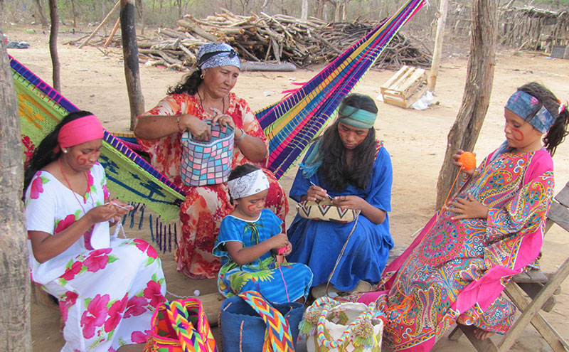
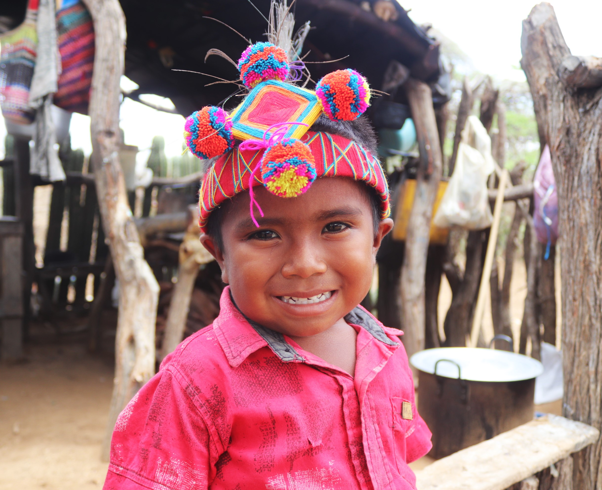
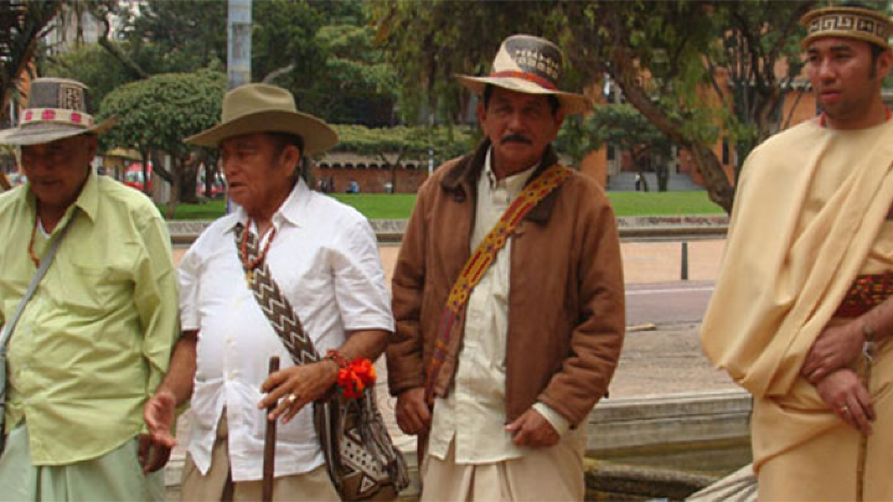
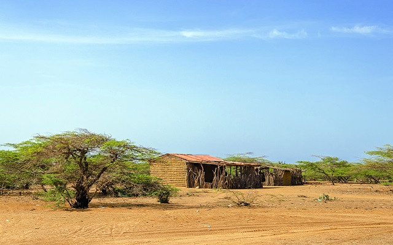
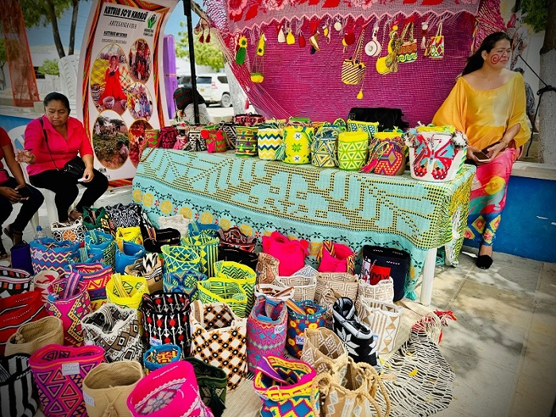

El Pueblo Wayuu
Los Wayuu habitan en la zona norte de Colombia y Venezuela, concretamente en el Departamento de La Guajira y en el Estado Zulia en Venezuela.
No se sabe con seguridad su origen, los historiadores estiman que pudieron haber llegado de las Antillas y la región Amazónica. Cuando los conquistadores españoles llegaron a la península de La Guajira, los wayuu ya estaban organizados bajo sus usos y costumbres, a pesar de que las misiones católicas trataron de quebrantar sus creencias, mantuvieron buena parte de las mismas.
Lengua y Tradición Oral
La lengua wayuu, se denomina Wayunaiki, perteneciente a la familia lingüística Arawak, se habla en toda la península de La Guajira con extensión en el Estado Zulia en Venezuela. Esta lengua aún conserva su vitalidad lingüística.
"A través de la historia, el principal medio para la transmisión de saberes y toda la cosmovisión es la oralidad, mediante su lengua nativa"
Los miembros de esta etnia expresan sus sentimientos, emociones, vivencias, mitos, leyendas, tradiciones milenarias de generación en generación a través de la oralidad, esta es una forma de mantener vivas sus creencias y manifestaciones más auténticas.
Educación Tradicional
A los niños se les enseña a pastorear, a pescar y cultivar la tierra y a las niñas por lo general en el encierro, se les enseña a tejer, a las tareas de la casa y todo lo que tiene que ver con su rol de mujer en la comunidad. Por lo tanto, la lengua materna se constituye en el medio fundamental para su desarrollo individual, social, emocional y cognitivo, lo que lo identifica como miembro de su etnia.
La Vivienda Wayuu
Llamada piichi o miichi, se trata de pequeñas casas divididas en dos salas, las tradicionales solían construirse con yotojoro, barro, caña seca y paja, en la actualidad prefieren técnicas y materiales modernos como el cemento.
Artesanías Wayuu
El tejido ha sido una tradición que se va transmitiendo a las niñas a muy temprana edad, esta labor que combinan con las actividades cotidianas, en los ratos libres, durante las visitas y cuando van de viaje. Desde hace siglos, conservan ritos de iniciación en este arte (en el encierro preparan a las niñas para la vida); quien es hábil tejiendo es digna de respeto y quien posee muchas y finas piezas tejidas adquiere poder y prestigio.
Para que la tradición se mantenga viva, tejer es una manera de mostrar sabiduría y creatividad.